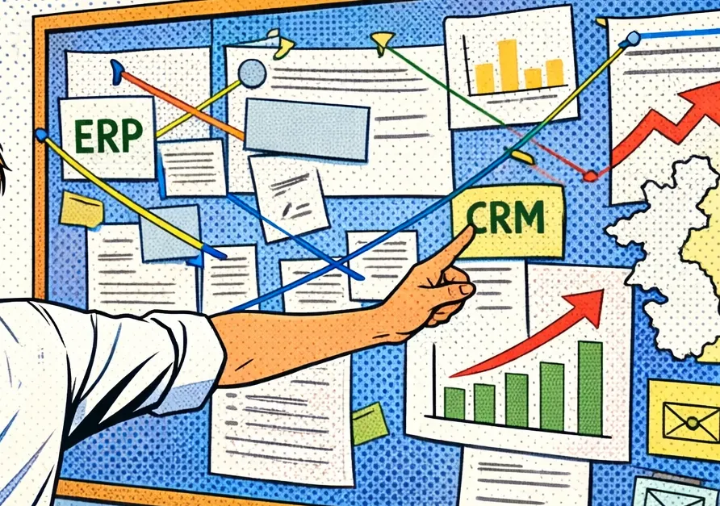

Операционка в e-com
Контекст: нужно было организовать работу и операционные процессы интернет-магазина, сократить расходы и выйти на прибыль.
Действия:
- Подбрал и обучил команду (склад, поддержка, продажи).
- Построил бизнес-процессы: закупки → склад → заказы → доставка → клиентский сервис.
- Внедрил и связал ключевые системы: ERP, CMS, CRM, e-mail маркетинг.
- Улучшил сайт (UX/UI, конверсия, структура).
- Автоматизировал всё, что смог (рутинные процессы и отчётность)
- Контролировал команду, маркетинговые активности, упаковку и клиентский опыт.
Результат: оно работает, при мне вышли на оборот X2 (на пике достигали 5 млн ₽/мес) и сократили расходы, перешли на прямой импорт и наладили бизнесовую часть.
Клиенты тоже довольны: Repeat Rate: 35%, LTV: 12 800 ₽.
Клиенты тоже довольны: Repeat Rate: 35%, LTV: 12 800 ₽.
InSales
Jivo
Unisender
МойСклад
Эвотор
Чем ценно: очень стрессовый, но самый разносторонний опыт, где всему приходилось обучаться самостоятельно, буквально с нуля. Ритейл точное не моё, но навыки бесценны.